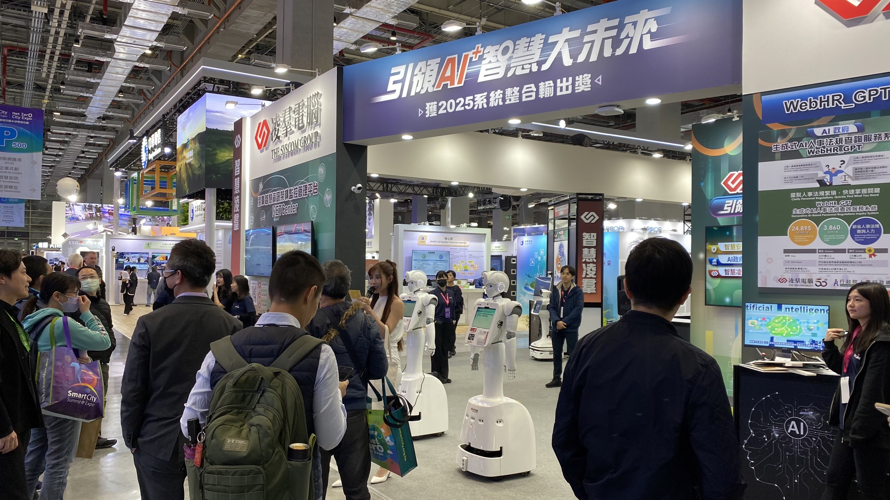

🏢 公司簡介
凌群電腦成立於 1975 年，為台灣知名的資訊服務公司之一（股票代碼：2453）。
公司主要業務涵蓋 系統整合、雲端運算、人工智慧、大數據分析、物聯網應用 等領域，
致力於協助政府與企業完成數位轉型與智慧應用發展。
凌群電腦以「以科技驅動創新、以服務成就價值」為理念，
在資訊服務產業深耕多年，擁有完善的研發能量與專業團隊，
並在台灣、日本、美國及東南亞地區設有據點。
公司組織架構
董事長
└─ 總經理
├─ 系統整合事業群
├─ 雲端與AI技術部
├─ 資安與網路服務部
├─ 業務暨市場開發部
├─ 產業解決方案部
├─ 軟體研發中心
├─ 技術支援與維運部
└─ 行政暨管理部門
部門介紹
一、系統整合事業群（System Integration Division）
- 提供企業級系統整合服務，包含主機、資料庫與網路設備整合。
- 為政府與企業規劃端到端的 IT 解決方案。
- 協助客戶進行數位轉型與大型專案建置。
二、雲端與 AI 技術部（Cloud & AI Technology Division）
- 開發雲端平台與人工智慧應用。
- 提供私有雲、公有雲與混合雲建置服務。
- 研發智慧客服、影像辨識與自然語言處理系統。
三、資安與網路服務部（Cybersecurity & Network Services Division）
- 建置企業資安防護架構與滲透測試。
- 提供防火牆、入侵偵測與資安監控服務。
- 執行資安稽核與員工資安教育訓練。
四、業務暨市場開發部（Sales & Marketing Division）
- 負責公司產品推廣與市場行銷。
- 開發企業客戶與投標專案管理。
- 建立品牌形象與維護公共關係。
五、產業解決方案部（Industry Solutions Division）
- 為各產業客戶提供客製化資訊解決方案。
- 涵蓋金融、電信、醫療、製造、零售等領域。
- 開發智慧醫院、POS 系統、智慧工廠等專案。
六、軟體研發中心（Software R&D Center）
- 研發企業級軟體與行動應用系統。
- 支援各事業群開發、測試與版本管理。
- 使用 Java、Python、.NET、Node.js 等技術。
七、技術支援與維運部（Technical Support & Operation Division）
- 提供售後技術支援與系統維護服務。
- 監控伺服器效能與資料備份。
- 建立 24 小時服務中心處理客戶需求。
八、行政暨管理部門（Administration & Corporate Services）
- 負責人事、財務、法務及行政管理。
- 規劃員工培訓、招募與績效考核制度。
- 支援公司運營、採購與內部稽核。
⚙️ 核心能力
- 系統整合與顧問服務
- 雲端運算與資安架構
- 人工智慧與大數據分析
- 企業流程自動化（RPA）
- 智慧城市與 IoT 應用
🌟 願景與使命
成為亞太區最具影響力的 智慧科技與資訊服務品牌。
以創新技術與專業服務，協助企業實現永續發展與智慧轉型。
👥 成員

1111706-簡亞軒

1111745–王哲彥

1111749–劉懿嫻

1111651–翁嘉筠
公司位置

地圖位置
峨嵋街

成都路
智慧城市展



AIoT展